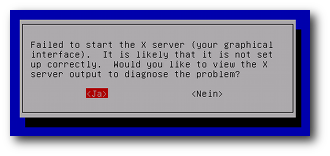
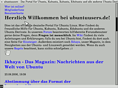

Problembehebung
Archivierte Anleitung
Dieser Artikel wurde archiviert, da er - oder Teile daraus - nur noch unter einer älteren Ubuntu-Version nutzbar ist. Diese Anleitung wird vom Wiki-Team weder auf Richtigkeit überprüft noch anderweitig gepflegt. Zusätzlich wurde der Artikel für weitere Änderungen gesperrt.
Zum Verständnis dieses Artikels sind folgende Seiten hilfreich:
kill-Befehl - Prozesse stoppen
XServer verbraucht zu viel Speicher¶
Es kann vorkommen, dass der XServer viele Ressourcen verbraucht, in der Regel Arbeitsspeicher. Dadurch kann das System extrem langsam werden, da den anderen Programmen zu wenig Speicher zur Verfügung steht und das ganze System extrem swappt. Genau genommen sind es nicht die Prozesse des XServers selber, welche die Ressourcen verbrauchen, sondern die Bilddaten, die für andere Applikationen dargestellt werden (= quasi alle anderen Programme).
Den Bedarf an XServer-Ressourcen der Programme kann man mit Hilfe von xrestop feststellen. Dieses Hilfsprogramm wird über das Paket
xrestop
 mit apturl
mit apturl
Paketliste zum Kopieren:
sudo apt-get install xrestop
sudo aptitude install xrestop
installiert [1] und mit dem Befehl xrestop im Terminal [2] gestartet. Interessant ist vor allem die Spalte "Pxm mem", welche den Speicherverbrauch (des XServers) pro Anwendung / Prozess anzeigt. Steht hier ein sehr hoher Wert (z.B. mehrere Hundert MB), so hat man den Übeltäter gefunden. Das betreffende Programm muss man allerdings von Hand stoppen (z.B. via [3]), dies geht nicht direkt aus xrestop heraus.
XServer startet gar nicht¶
Es kann vorkommen, dass der XServer nicht mehr funktionieren möchte. Dies erkennt man daran, dass die graphische Oberfläche überhaupt nicht mehr startet und nicht einmal mehr der Bildschirm zum Einloggen in die Desktopumgebungen kommt, sondern ein blauer Bildschirm erscheint.
Die Ursachen können vielfältig sein. Oftmals liegt das Problem an einer mangelhaften Konfiguration des XServers. Aber es gab schon Fehler im XServer, so dass dieser nicht mehr starten mochte. Egal aus welchen Grunde: Das Ergebnis ist, dass man in einer Textkonsole landet, so dass eine Problemlösung für unerfahrene User sehr schwer wird.

XServer auf alternativen Treiber umstellen¶
Sollte der XServer aufgrund z.B. eines mangelhaften oder falsch installierten Grafikkartentreibers nicht mehr starten, so kann dieser auf einen Treiber umgestellt werden, der keine Probleme macht. Mittels eines Konsolen-Text-Editors mit Root-Rechten ändert man in der Konfigurationsdatei des XServers /etc/X11/xorg.conf im Bereich Device den Grafikartentreiber. Auf jeden Fall sollten
nv(Für Nvidia-Karten)ati(Für ATi-Karten)
oder
vesa(für alle anderen Grafikkarten und zur Not auch Nvidia oder ATi)
funktionieren. Diese Treiber bieten keine 3D-Unterstützung, laufen eventuell mit einer niedrigeren Auflösung oder Wiederholfrequenz. Aber sie sollten immer funktionieren. Also aus den Zeilen
Section "Device"
Identifier "NVIDIA Corporation NV34 [GeForce FX 5200]"
BusID "PCI:1:0:0"
Driver "nvidia"
EndSectionmacht man z.B.
Section "Device"
Identifier "NVIDIA Corporation NV34 [GeForce FX 5200]"
BusID "PCI:1:0:0"
Driver "vesa"
EndSectionDanach sollte der XServer nach einem Neustart mittels
sudo /etc/init.d/gdm restart # Bei Ubuntu oder Xubuntu sudo /etc/init.d/kdm restart # Bei Kubuntu
wieder anlaufen.
Variante 2:
Beim Booten dem Kernel die Option xforcevesa mitgeben. Siehe Artikel Booten für weitere Informationen. Die Option wählt man ab Ubuntu 9.10 im Bootmanager Grub 2 aus, wie im Abschnitt Booten#Grub-2 kurz und verständlich erklärt ist. Dieser Eintrag wird nicht dauerhaft gespeichert, sondern gilt nur einmalig.
Danach kann man sein System wieder reparieren, z.B. versuchen, über "System -> Systemverwaltung -> Hardwaretreiber" einen passenderen Treiber zu installieren, ebenfalls dort einen unpassenden wieder dezuinstallieren oder den installierten neu zu installieren (Treiber kurz deaktivieren und wieder aktivieren). Auch ist es dann einfacher möglich, die Konfiguration anzupassen (in der Datei /etc/X11/xorg.conf bzw. zusätzlich eventuell auch über "System -> Einstellungen -> Bildschirme").
XServer neu einrichten lassen¶
Sollte der XServer durch das Umschalten des Treibers immer noch nicht starten, so ist eventuell die Konfiguration des Server komplett falsch. Hier müsste der XServer komplett neu eingerichtet werden. Dies kann aus einem behelfsmäßig gestarteten XServer heraus geschehen: XServer grafisch einrichten.
Ohne laufenden XServer kann man die Konfiguration im Terminal neu einrichten:
sudo dpkg-reconfigure xserver-xorg
Alternativ gibt es dazu die Möglichkeit, den Ubuntu Recovery Modus zu starten und dort "xfix" auszuwählen.
Hinweis:
xfix heißt seit Ubuntu 10.04 failsaveX
Ohne XServer im Internet surfen¶

Sollten alle Stricke reißen, so steht man komplett ohne einen XServer und ohne einen brauchbaren Internetbrowser da. Besitzt man kein zweites installiertes Betriebssystem, keinen zweiten Rechner oder eine Live-CD, so steht man schlecht da. Man kann nicht einmal nach einer Lösung suchen.
Doch auch hier kann man sich behelfen. Es gibt Textbrowser wie w3m , Lynx oder links2 . Gerade Links2 ist ein sehr gutes Werkzeug, da er einen optionalen graphischen Modus besitzt. So kann man aus der Konsole heraus mit der Maus und einer halbwegs brauchbaren graphischen Darstellung nach der Ursache des Problems suchen.
 Übersichtsartikel
Übersichtsartikel- Erstellt mit Inyoka
-
 2004 – 2017 ubuntuusers.de • Einige Rechte vorbehalten
2004 – 2017 ubuntuusers.de • Einige Rechte vorbehalten
Lizenz • Kontakt • Datenschutz • Impressum • Serverstatus -
Serverhousing gespendet von